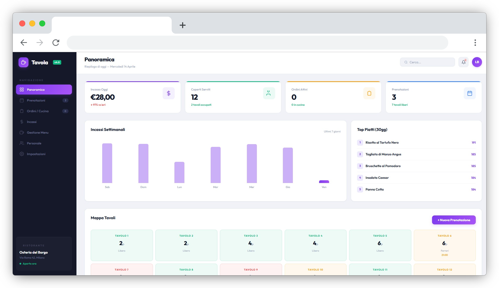

Applicazioni Web
Su Misura
Realizzo applicazioni web semplici, strumenti interattivi e soluzioni digitali pensate per rendere più rapido, ordinato e funzionale il lavoro quotidiano.

Cosa posso costruire
Sviluppo applicazioni web leggere e personalizzate, pensate per risolvere esigenze specifiche senza trasformarsi in piattaforme inutilmente complesse.
Tecnologie e gestione
La scelta tecnica dipende da cosa deve fare l’applicazione, da chi dovrà usarla e da quanto dovrà essere semplice aggiornarla nel tempo.
Con cosa la costruisco
Per strumenti leggeri, landing interattive, calcolatori e interfacce personalizzate posso lavorare con HTML, CSS e JavaScript. Quando il progetto richiede gestione di dati, invio di informazioni o funzionalità più strutturate, scelgo soluzioni tecniche adatte al caso, mantenendo il progetto stabile, chiaro e sostenibile.
Pubblicazione e utilizzo
L’applicazione può essere pubblicata online, integrata in un sito esistente o consegnata come strumento separato. Prima della consegna controllo funzionamento, responsive, navigazione, collegamenti e comportamento dei moduli, così il progetto sia pronto per essere utilizzato.
Manutenzione e miglioramenti
Dopo la pubblicazione posso seguire eventuali aggiornamenti, piccole modifiche, controlli tecnici e miglioramenti progressivi, in base agli accordi definiti nel preventivo. In questo modo lo strumento può evolvere nel tempo senza perdere ordine e affidabilità.
Alcuni esempi del mio lavoro
Una selezione di applicazioni web, tool interattivi e demo funzionali create per mostrare possibilità progettuali, usabilità e approccio visivo.
Tavola
Gestionale demo per ristorante con ordini in cucina, calendario prenotazioni, gestione tavoli e menu.
Apri la demo ↗PostFlow
Calendario editoriale demo per contenuti social, con organizzazione dei post e anteprime per piattaforma.
Apri la demo ↗HashBoost
Generatore demo di hashtag per Instagram e TikTok, organizzati per popolarità e nicchia di settore.
Apri la demo ↗PreventivoFacile
Calcolatore demo di preventivi personalizzabile per chi vende servizi, pronto da inviare o stampare.
Apri la demo ↗MailCraft
Builder demo di template email modulari, pensato per mostrare struttura, anteprima e codice esportabile.
Apri la demo ↗CVBuilder
Generatore demo di curriculum online con anteprima e struttura pensata per l’esportazione in PDF.
Apri la demo ↗CloudDesk
Demo di assistente conversazionale per supporto B2B, con percorsi dedicati a documentazione, fatturazione e richieste tecniche.
Apri la demo ↗GrowthLab
Demo di lead generation guidata, pensata per qualificare il visitatore e raccogliere richieste in modo ordinato.
Apri la demo ↗